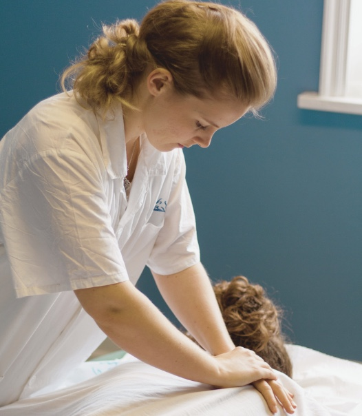

I'm originally from England, but life's path and my heart led me to Switzerland. I tried Tuina for the first time through a new friend and fell in love right then and there. After that one treatment, I was enchanted. I decided to train as a Tuina massage therapist in York, UK. This launched me on a new inner and outer journey of love and self-discovery. Later, I trained as a yoga teacher with Meghan Currie in Bali.
Why “Full Bloom”?, In TCM (Traditional Chinese Medicine), it is understood that the human body is a part of nature. While studying the meridian channels of Chinese medicine, I came across a chapter describing TCM's view of the Heart Meridian;
"Belonging to the fire element, the heart meridian is associated with warmth, laughter, and enthusiasm. Just as the summer season, associated with the fire element, brings flowering and ripening—the blossoming of all the seeds planted in spring, love is the blossoming of the human being. Indeed, this is who we are, in full "bloom." This love is felt nowhere more deeply than in the heart. Love is the current that connects us to one another, reaching the farthest corners of the body/mind/spirit with every heartbeat ."
My work is much more than a massage; for me, it's an extension of my heart. I hope to bring people back to themselves by bringing their bodies back to harmony and healing.